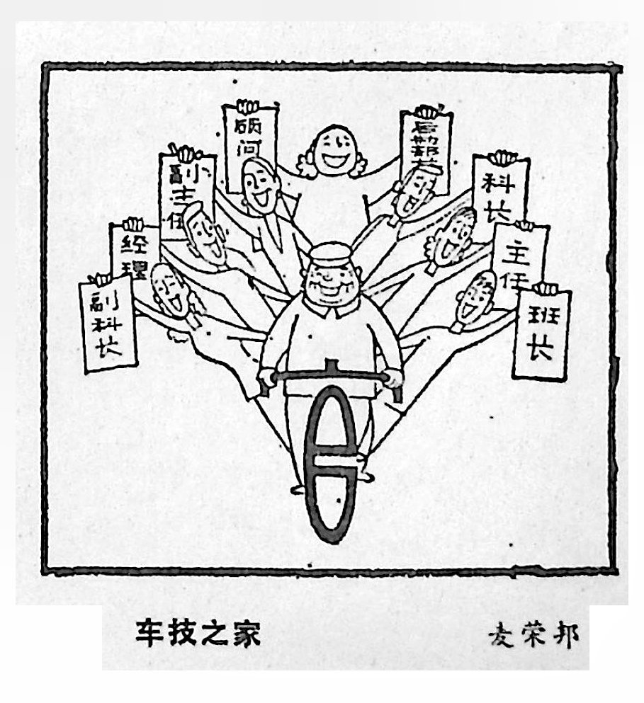

麦荣邦 《人事》1987年第2期（总第17期），封三
车技之家
A Family of Trick Cyclists
- Text in the drawing
- 副科长 / 经理 / 副主任 / 顾问 / 后勤（？） / 科长 / 主任 / 班长
Deputy section chief / Manager / Deputy director / Adviser / [illegible] / Section chief / Director / Team leader - Description
- Like an acrobatic troupe, a whole family balances on one man's unicycle, each relative holding up the post he has secured: deputy section chief, manager, deputy director, adviser, section chief, director, team leader.
- Note
- 车技, trick cycling, was a staple of Chinese acrobatic troupes, which often performed as families.
- Artist
- Mai Rongbang 麦荣邦
- Published in
- 《人事》1987年第2期（总第17期）, inside back cover
- Themes
- Nepotism

Cite
Mai Rongbang, “车技之家” [A Family of Trick Cyclists], Renshi (Personnel) 《人事》, 1987, no. 2, inside back cover.